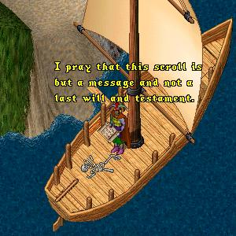
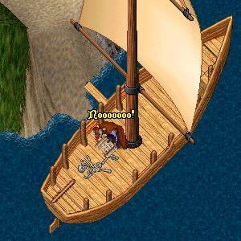
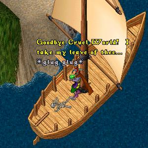
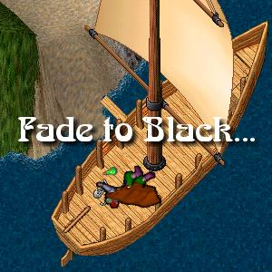

Hands trembling, ImaNewbie
prys loose the scroll from the
skeleton and begins to read...
 |
|
(the contents of the scroll) March 31st. Well I cannot believe this has happened. I was about a mile away from the boat making good time when I encountered an innocent looking green snake on the path. Before I was even aware of his presence he struck, biting me just above the ankle. I quickly grabbed him by the tail and snapped him like a whip breaking his neck. Although it was a bit painful the bite did not seem to hamper my walking so I continued on in the direction of the boat. As I continued on the path I began to feel a little dizzy but I figured I should keep going. April ? I don't know how long it has been since I arrived at the boat. I must have passed out. When I awoke my mouth and throat were parched and there was a terrible burning in my ankle where that damn snake bit me. I looked at the wound and to my horror my entire lower leg is inflamed and swollen and the area around the bite is turning black. April ? Once again I awoke, this time with a terrible fever. I am feeling extremely weak and am sure that I will soon die. What irony that I should meet my end while on my way to what I thought was a new beginning. If anyone should find this note, please get a message to ImaNewbie that I forgive him his indiscretions and that I loved him to the end. Farewell |
 |
Stricken with grief at the realization that this
skeleton is all that remains of his true love
Irma, ImaNewbie decides that there is only one
way they will ever be together again. Reaching
into his backpack ImaNewbie withdraws a
bottle filled with a glowing green liquid...
 |
 |
The End? Wait just a Darned Minute!
This Can't Be the End!
You Mean to Tell Me After 4 Years
the Best you can Come Up With is some
Cheesy Romeo and Juliet (she dies,
he dies, The End) Rip-Off!!!
Yeah, I hear 'ya. I guess I owe all the loyal ImaNewbie fans better than that... OK, well I guess you will just have to come back again next week to find out how it all really turns out. Stay 'tooned!